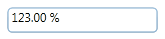
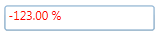
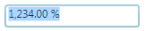
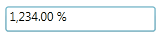

IsReadOnly
If the PercentTextBox is read-only, then no user input or edits are allowed but programmatic changes can be made. The user can still select text and the cursor still appears.
The Corner Radius describes the degree to which corners are rounded. This property has no default value.
|
XAML
<syncfusion:PercentTextBox x:Name="percentTextBox" PercentValue="123" Height="25" Width="150" CornerRadius="4"/> |

Figure 792: PercentTextBox
The Foreground of the PercentTextBox can be customized based on the Value property. When Negative a value is assigned to the PercentValue property, then automatically the NegativeForeground value gets assigned to Foreground property.
Note: The NegativeForeground in the PercentTextBox can be enabled by setting the ApplyNegativeForeground property to true.
|
XAML
<syncfusion:PercentTextBox x:Name="percentTextBox" Height="25" Width="150" CornerRadius="2" PercentValue="-123" NegativeForeground="Red" ApplyNegativeForeground="True"/> |

Figure 793: PercentTextBox – NegativeForeground
The Foreground of the PercentTextBox can be customized based on the PercentValue property. When zero is assigned as a value to the PercentValue property, then automatically the ZeroColor is set to the Foreground property.
Note: The ZeroColor in the PercentTextBox can be enabled by setting the ApplyZeroColor property to true.
|
XAML
<syncfusion:PercentTextBox x:Name="percentTextBox" Height="25" Width="150" CornerRadius="2" PercentValue="-123" ZeroColor="Green" ApplyZeroColor="True"/> |
Figure 794: PercentTextBox – ZeroColor
If you press the Enter key in the PercentTextBox then the Focus moves to the next element in the application. To enable this feature you have to set the EnterToMoveNext property to true.
TextSelectionOnFocus
The TextSelectionOnFocus property allows the PercentTextBox to act like standard text boxes when the cursor hovers over.

Figure 795: TextSelectionOnfocus set to true

Figure 796: TextSelectionOnfocus set to false